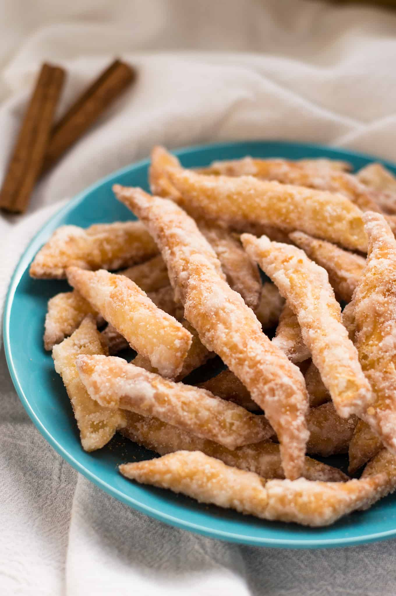

Kurma Recipe

Description
Kurma is a popular Trinidadian snack made of spiced dough that is fried until crispy and coated in a sweet, crackly sugar syrup. It’s crunchy, lightly spiced with cinnamon, ginger, and nutmeg, and is often enjoyed during festive occasions like Divali or simply as a sweet treat.
Ingredients
- 2 cups all-purpose flour
- ½ teaspoon ground cinnamon
- ½ teaspoon ground ginger
- ½ teaspoon ground nutmeg
- ¼ teaspoon salt
- 2 tablespoons sugar (for the dough)
- 2 tablespoons butter (softened)
- ¾ cup water (approximately, for mixing dough)
- Oil for deep frying
- 1 cup sugar (for the syrup)
- ½ cup water (for the syrup)
- 1 teaspoon vanilla essence (for syrup flavoring)
Steps
- Mix the dry ingredients: In a large bowl, combine the flour, cinnamon, ginger, nutmeg, salt, and 2 tablespoons of sugar.
- Add butter: Rub the softened butter into the flour mixture until it looks like fine breadcrumbs.
- Form the dough: Slowly add the water a little at a time, kneading gently until you form a soft but firm dough (not sticky).
- Rest the dough: Let the dough rest for about 10–15 minutes.
- Roll and cut: Roll out the dough on a floured surface until it’s about ¼ inch thick. Cut into thin strips (about finger size).
- Fry the dough: Heat oil in a deep pan. Fry the strips over medium heat until golden brown and crispy. Remove and drain on paper towels.
- Make the syrup: In a pot, combine 1 cup sugar and ½ cup water. Bring to a boil and cook until it reaches a slightly thick, sticky consistency (like light thread stage). Stir in the vanilla essence.
- Coat the kurma: Quickly toss the fried kurma into the hot syrup, mixing well to coat each piece evenly.
- Cool and harden: Spread the syrup-coated kurma on a tray to cool and harden.
Enjoy!
Home